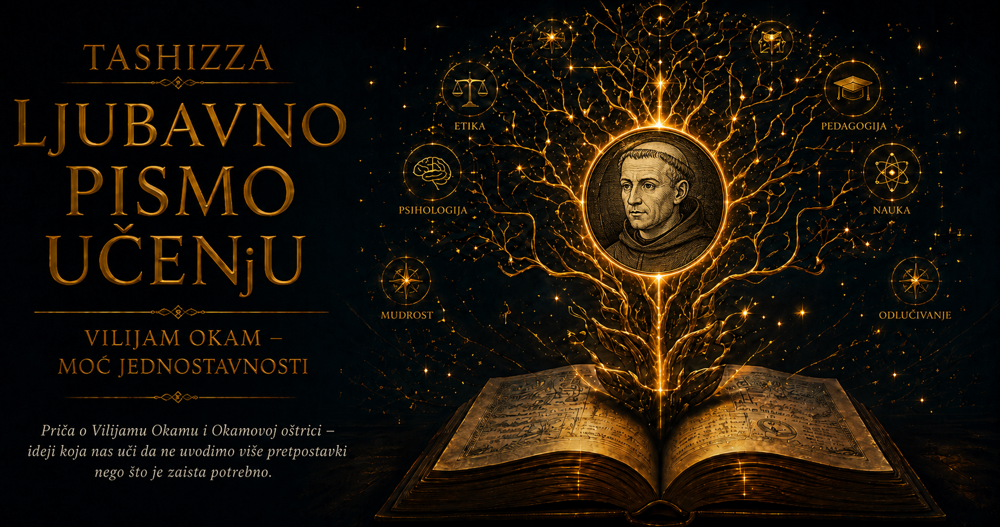

Ljubavno pismo učenju

Postoje mislioci čiji se život pamti po velikom otkriću, presudnoj knjizi ili jednoj rečenici koja je promenila tok nauke. Vilijam Okam ostao je upamćen po britvi koju nikada nije držao u ruci i po pravilu koje verovatno nikada nije izgovorio upravo onako kako ga danas ponavljamo. Ipak, metafora britve pristaje njegovom duhu. Čitavog života pokušavao je da iz ljudskog mišljenja ukloni ono što mu se činilo suvišnim: nepotrebne pojmove, nevidljive posrednike, preterano umnožene uzroke, velike apstraktne građevine i autoritete koji su od ljudi tražili poslušnost bez dovoljno razloga. Njegova jednostavnost nije bila udobna skromnost čoveka koji želi da izbegne složena pitanja. Bila je zahtevna disciplina uma i opasna navika da se svaka tvrdnja upita na čemu zaista počiva.
Rodio se verovatno oko 1287. godine u malom mestu Okam u engleskoj grofoviji Sari. O njegovom detinjstvu gotovo ništa pouzdano ne znamo. Srednjovekovni život siromašnog fratra nije ostavljao za sobom dnevnike, porodične albume i nežne uspomene koje bi kasnijim biografima omogućile da prate rađanje njegovog karaktera. Sačuvano je ime mesta koje je postalo deo njegovog imena, nekoliko tragova o školovanju i veliki korpus dela iz kojih se čovek mora naslutiti kroz način na koji postavlja pitanje, razdvaja pojmove i odbija da se skloni pred zaključkom. Ta oskudica podataka na neobičan način odgovara njegovoj filozofiji. Iza nje ne stoji bogata legenda o izuzetnom dečaku, već pojedinac čiju ličnost upoznajemo po tragovima stvarnog mišljenja.
Engleska u kojoj je odrastao bila je zemlja feudalnih obaveza, crkvenih poseda, kraljevskih sukoba i duboko ukorenjene društvene hijerarhije. Pismenost je pripadala malom delu stanovništva, knjige su se prepisivale rukom, a univerzitet je predstavljao jedan od retkih prostora u kojima je nadaren mladić mogao da se udalji od granica svog porekla. Crkva nije bila samo verska ustanova. Ona je bila mreža obrazovanja, prava, diplomatije, bogatstva i političke moći. Ulazak u franjevački red značio je prihvatanje života molitve i discipline, ali i pristup svetu učenja koji je povezivao manastirske kuće, univerzitete i velike rasprave latinskog hrišćanstva.
Okam je kao mladić pristupio franjevcima, redu nastalom iz radikalnog ideala Franje Asiškog. Prvi franjevci želeli su da žive bez imovine, oslonjeni na propovedanje, milostinju i uverenje da se Hristov život može slediti doslovnije nego što su to dopuštale bogate crkvene ustanove. Do Okamovog vremena taj ideal već je bio izvor unutrašnjih sukoba. Red je narastao, dobio škole, biblioteke, položaje i uticaj, a pitanje da li zajednica koja tvrdi da ništa ne poseduje ipak koristi kuće, knjige i hranu postalo je teološki i pravno zamršeno. Mladi fratar je tako ušao u zajednicu u kojoj su se siromaštvo i učenost, poslušnost i savest, jednostavan život i složena administracija neprestano sudarali.
Školovao se u franjevačkoj kući u Londonu, a zatim je studirao teologiju u Oksfordu, jednom od najživljih intelektualnih središta tadašnje Evrope. Univerzitetski dan nije bio ispunjen tihim čitanjem u samoći. Srednjovekovna škola živela je kroz raspravu. Učenik je slušao predavanje, proučavao priznati autoritet, iznosio prigovore, odgovarao protivniku i branio zaključak pred zajednicom ljudi obučenih da otkriju svaku nedoslednost. Aristotelova dela, hrišćanska teologija, logika, gramatika i komentari ranijih učitelja činili su složen svet pojmova koji je zahtevao izuzetnu memoriju i preciznost. U takvom okruženju Okam je razvio svoj najprepoznatljiviji dar: umeo je da vidi gde se stvarni problem završava, a gde počinje magla stvorena nepažljivom upotrebom reči.
Među njegovim velikim prethodnicima nalazili su se Toma Akvinski i Jovan Duns Skot. Akvinski je izgradio veličanstvenu sintezu Aristotelove filozofije i hrišćanske teologije. Skot, takođe franjevac, razvio je izuzetno suptilan sistem u kome su razlike između bića, pojmova, volje i saznanja bile obrađene gotovo zadivljujućom finoćom. Okam ih je čitao sa poštovanjem koje se pokazuje ozbiljnim protivljenjem. Nije bio učenik koji ruši prethodnike zato što ih nije razumeo. Upravo ih je razumeo dovoljno dobro da bi osetio koliko se filozofija može udaljiti od iskustva kada svakom pojmu kojim govori dodeli posebno postojanje u stvarnosti.
U oksfordskim raspravama Okam nije birao laka pitanja niti je prihvatao da učenost znači ponavljanje autoriteta. Privlačile su ga tačke na kojima se reči, pojmovi i stvarnost više ne podudaraju sasvim jasno. Dok su drugi gradili sve složenije podele kako bi sačuvali nasleđene sisteme, on je proveravao da li svaka od tih podela zaista nešto objašnjava. Takav način rada učinio ga je zahtevnim sagovornikom: nije se zadovoljavao ugledom prethodnika, lepotom teorije ni njenom dugom tradicijom. Tvrdnja je morala da izdrži ispitivanje sopstvenih pretpostavki.
U tome se naslućuje njegov karakter, iako iza sebe nije ostavio autobiografiju iz koje bismo mogli neposredno upoznati njegove misli i osećanja. Bio je izuzetno precizan, polemičan i spreman da jednu teškoću prati sve dok ne otkrije na kom mestu argument prestaje da važi. Njegovi spisi ne ostavljaju utisak čoveka koji pojednostavljuje zato što ne vidi složenost. Naprotiv, Okam je složene sisteme poznavao iznutra. Upravo mu je to znanje omogućavalo da razlikuje dubinu od suvišnog umnožavanja pojmova.
Njegova intelektualna samostalnost imala je i versku dimenziju. Kao franjevac i teolog, prihvatao je veru kao središnji deo svog života, ali nije smatrao da razum može dokazati svaku istinu koju vera ispoveda. Time nije pokušavao da oslabi religiju kojoj je pripadao. Odbijao je da joj pruži prividnu sigurnost pomoću argumenata koji ne mogu da iznesu teret zaključka. Granica razuma za njega je bila pitanje poštenja: čovek mora znati kada nešto može pokazati dokazom, a kada govori iz vere, predanja ili poverenja.
Takva odanost jasnom razlikovanju odrediće i njegovu sudbinu. Navika stečena u logičkim raspravama — da se nijedan zaključak ne prihvati samo zato što dolazi sa visokog mesta — kasnije će ga dovesti u otvoreni sukob sa crkvenom vlašću. Put od oksfordske učionice do izgnanstva nije bio napuštanje njegovih ranijih uverenja. Bio je njihov prelazak iz rukopisa u život, u okolnosti u kojima greška u zaključivanju više nije značila samo poraz u raspravi, nego poslušnost odluci koju je smatrao pogrešnom.
U delu Summa logicae, nastalom početkom treće decenije četrnaestog veka, Okam je sistematski ispitivao termine, iskaze, zaključke i načine na koje reči zastupaju stvari. Za savremenog čitaoca takva rasprava može delovati udaljeno od života, ali za njega je logika bila sredstvo čišćenja mišljenja. Jedna reč može označavati pojam, stvar ili samu sebe; značenje izraza zavisi od uloge koju ima u rečenici. Ako se te razlike zanemare, čovek lako poveruje da je dokazao nešto o svetu, iako je samo neprimetno promenio značenje reči. Okam je u jeziku prepoznavao mesto na kome se um i stvarnost dodiruju, ali i mesto na kome najlakše mogu da se raziđu.
Njegova rana dela nastajala su u okviru univerzitetske tradicije komentarisanja Sentencija Petra Lombardskog, osnovnog teološkog udžbenika latinskog srednjeg veka. Mladi teolog morao je da pokaže kako razume nasleđena pitanja i kako ume da ih samostalno razradi. Okam je taj zadatak prihvatio sa toliko samostalnosti da je izazvao otpor. Oksfordski kancelar Džon Luterel smatrao je deo njegovih stavova sumnjivim i uputio je optužbe papskoj kuriji. Okam je oko 1324. godine pozvan u Avinjon, gde je komisija godinama ispitivala njegove teološke tvrdnje. Iako njegova filozofija nije bila konačno osuđena kao jeres, on se našao u položaju čoveka kome se ne sudi zbog nedoličnog ponašanja, već zbog načina na koji misli.
Avinjon je morao izgledati sasvim drugačije od oksfordskih učionica. Papska kurija bila je veliki administrativni i diplomatski centar, puna pravnika, izaslanika, crkvenih dostojanstvenika i ljudi čiji su razgovori mogli odlučivati o kraljevima, biskupijama i čitavim redovima. Okam je stigao kao osumnjičeni teolog, verovatno svestan da njegovu sudbinu određuju ljudi čije razumevanje njegovih stavova možda nije bilo jednako njihovoj moći da ih osude. Višegodišnje čekanje moralo je pojačati njegovu osetljivost na razliku između istine i autoriteta. Čovek koji je u logici tražio da svaka tvrdnja pokaže za šta stoji sada se nalazio pred ustanovom koja je svoje pravo da presuđuje smatrala delom božanskog poretka.
Upravo u Avinjonu njegova životna priča dobila je novi pravac. General franjevačkog reda Mihailo iz Čezene zamolio ga je da prouči spor o apostolskom siromaštvu. Pitanje je naizgled bilo usko: da li su Hristos i apostoli posedovali imovinu, pojedinačno ili zajednički? Iza njega se nalazila čitava predstava o tome šta Crkva jeste. Franjevci su svoju vernost osnivaču povezivali sa tvrdnjom da je savršeno siromaštvo moguće i da predstavlja način ugledanja na Hrista. Papa Jovan XXII osporavao je određene oblike tog učenja i pravne konstrukcije kojima je red pokušavao da koristi dobra, a da ih formalno ne poseduje.
Okam je proučavao papine odluke, ranije crkvene dokumente, franjevačko pravilo i argumente obe strane. Njegov zaključak bio je zapanjujuće hrabar: papa može pogrešiti, može protivrečiti prethodnim obavezujućim učenjima i može pasti u jeres. Za srednjovekovnog fratra to nije bila akademska igra. Poslušnost je bila deo njegovog zaveta, a jedinstvo Crkve osnovna vrednost njegovog sveta. Ipak, Okamova savest nije mogla da prihvati da položaj čoveka automatski pretvara njegovu tvrdnju u istinu. Britva se sada pomerila iz logike u politiku. Sekla je pretpostavku da moć sama sebi pruža dovoljno opravdanje.
U maju 1328. godine Okam je sa Mihailom iz Čezene, Bonagratijom iz Bergama i još nekoliko franjevaca napustio Avinjon bez papine dozvole. Bekstvo je bilo dramatičan prelaz iz života učenjaka pod istragom u život izgnanika. Krenuli su prema Italiji, a zatim potražili zaštitu cara Ludviga Bavarskog, koji se i sam sukobljavao sa papom oko granica carske i crkvene vlasti. Predanje Okamu pripisuje reči upućene caru: „Brani me mačem, a ja ću te braniti perom.” Ne može se sa sigurnošću utvrditi da li ih je upravo tako izgovorio, ali one tačno oslikavaju savez koji je usledio. Vladar mu je pružio utočište, a fratar je svoju izuzetnu sposobnost argumentovanja usmerio prema pitanjima vlasti, prava i slobode. Zbog napuštanja Avinjona bez dozvole bio je izopšten iz crkvene zajednice, premda njegovo filozofsko učenje nikada nije u celini osuđeno kao jeretičko.
Njegov odnos sa Mihailom iz Čezene bio je presudan. Mihailo mu nije bio samo starešina, već čovek koji je filozofa uveo u sukob u kome ideje više nisu živele u rukopisima. Kroz njega je Okam shvatio da rasprava o siromaštvu određuje sudbinu stvarnih zajednica. Ludvig Bavarski, sa druge strane, nije bio idealni junak slobode, već srednjovekovni vladar sa sopstvenim političkim interesima. Okam je prihvatio njegovu zaštitu ne zato što je carevu moć smatrao svetom, već zato što mu je ona omogućila da govori protiv druge, trenutno opasnije moći. Njegovi savezi bili su praktični, ali njegova argumentacija nije postala puka carska propaganda. Nastojao je da ograniči i duhovnu i svetovnu vlast, jer je u svakoj neograničenoj moći prepoznavao mogućnost zloupotrebe.
U Minhenu je proveo najveći deo ostatka života. Više nije bio mladi oksfordski teolog koji se priprema za akademsku karijeru. Postao je fratar bez sigurnog povratka, udaljen od univerziteta, pod zaštitom vladara i u trajnom sukobu sa papstvom. Pisao je snažno i neumorno: Opus nonaginta dierum, delo nastalo tokom „devedeset dana” intenzivnog rada; Dialogus, široku raspravu oblikovanu kao razgovor učitelja i učenika; spise protiv Jovana XXII i Benedikta XII; rasprave o papinoj vlasti, carstvu i pravima hrišćanske zajednice. Njegovo pero više nije analiziralo samo način na koji termin stoji umesto pojedinačne stvari. Ispitivalo je ko ima pravo da govori u ime Crkve i šta čovek može učiniti kada poglavar zahteva prihvatanje onoga što savest prepoznaje kao zabludu.
Okamova politička misao nije nudila savremenu demokratiju u današnjem smislu, ali je sadržala zamisli koje će kasnijim vekovima postati dragocene. Crkva se za njega nije mogla svesti na papu i njegovu administraciju. Obuhvatala je zajednicu vernika, među kojima se istina ne čuva isključivo kroz jedan položaj. Papa je imao važnu službu, ali njegova vlast nije bila bez granica. U okolnostima zloupotrebe, hrišćani su mogli da mu se suprotstave. Svetovni vladar nije dobijao neograničenu moć samim tim što se suprotstavlja papi. Vlast je imala svrhu: da služi zajedničkom dobru i štiti prava ljudi. Kada bi prekoračila tu svrhu, javljalo se pitanje otpora.
U tim spisima vidi se ista navika uma koja je oblikovala njegovu logiku. Okam je razdvajao ono što ljudi često spajaju zato što im tako odgovara. Razlikovao je službu od nepogrešivosti, zajednicu od njenog upravitelja, veru od političkog interesa, pravo od gole sile. Nije prihvatao da se iz jedne istinite tvrdnje neprimetno izvede druga, mnogo veća. Ako je Hristos poverio Petru posebnu ulogu, iz toga još ne sledi da svaki Petrov naslednik može bez ograničenja raspolagati životima i imovinom hrišćana. Ako je jedinstvo Crkve dobro, iz toga ne sledi da je ćutanje pred zabludom obavezno. Njegova britva postala je način odbrane slobode od neurednog zaključivanja.
Čovek iza tih rasprava verovatno nije bio blag pomiritelj. Jezik njegovih polemičkih dela ume da bude oštar, uporan i nemilosrdno usmeren na protivničku nedoslednost. U njemu se oseća temperament čoveka koji teško odustaje kada poveruje da je pronašao grešku. Takva snaga nosila je i slabost. Potreba za jasnoćom može preći u nestrpljenje prema ljudima koji žive unutar protivrečnosti, a polemička sigurnost može suziti prostor za milost. Okam je pripadao vremenu u kome su optužbe za jeres imale ozbiljne posledice, pa ni on nije uvek govorio opreznim jezikom kasnijeg pluralizma. Njegova hrabrost ostaje stvarna upravo zato što nije pripadao našem dobu i nije posedovao njegove reči za slobodu savesti, a ipak je pokušavao da ograniči vlast koja je tražila bezuslovno pokoravanje.
Njegov franjevački identitet nikada nije bio nevažan ukras. Spor o siromaštvu doticao je pitanje kakav život može potvrditi istinu koju propoveda. Zašto bi se učenjak izložio izopštenju zbog pravne rasprave o posedovanju? Zato što je u njoj video nešto dublje: mogućnost da moćna ustanova preuredi sećanje na Hrista kako bi opravdala sopstveno bogatstvo i kontrolu. Ideal siromaštva za Okama nije morao značiti prezir prema materijalnom svetu. Bio je granica postavljena pred ljudsku pohlepu i podsetnik da se duhovni autoritet gubi kada svoju svetost dokazuje zemaljskom silom.
Njegova teologija otkriva još jednu važnu crtu: snažno naglašavanje Božje slobode. Okam je odbijao da Boga zatvori u ljudske filozofske sisteme. Svet postoji jer ga je Bog slobodno stvorio; njegov poredak ne možemo u celini izvesti iz apstraktne nužnosti. Takvo shvatanje povećavalo je značaj iskustva. Ako priroda nije morala biti upravo ovakva kakva jeste, čovek mora pažljivije posmatrati kako ona zaista deluje. Okam sam nije bio moderni eksperimentalni naučnik, ali je njegovo ograničavanje metafizičkih nužnosti pomoglo stvaranju intelektualne klime u kojoj opažanje dobija veću težinu od grandiozne dedukcije.
Kasniji tumači ponekad su ga predstavljali kao usamljenog junaka koji je jednim potezom presekao srednji vek i otvorio vrata modernoj nauci. Takva slika bila bi upravo ona vrsta suvišnog pojednostavljenja protiv koje nas njegova britva upozorava. Okam je duboko pripadao srednjem veku. Bio je franjevac, teolog, komentator Aristotela, učesnik rasprava čije nam pretpostavke danas deluju strane. Nije želeo da napusti hrišćanski svet, već da ga oslobodi loših argumenata i nepravednih zahteva. Njegova posebnost nastala je unutar tradicije, kroz hrabrost da sopstvenu tradiciju shvati dovoljno ozbiljno da joj postavi neugodna pitanja.
Nadimak Venerabilis Inceptor, „časni početnik”, pratio ga je zato što nije dostigao položaj punopravnog profesora teologije u uobičajenom univerzitetskom smislu. U toj tituli ima nečeg dirljivo prikladnog. Jedan od najuticajnijih mislilaca svog veka ostao je čovek nezavršene akademske karijere. Institucija mu nije dala poslednji znak priznanja, ali mu istorija nije uskratila glas. Njegov život podseća da zvanje i dubina nisu isto, da zvanična potvrda može izostati upravo kada mišljenje postane suviše samostalno i da početnik ponekad vidi ono što čuvari dovršenih sistema više ne primećuju.
Okam je verovatno umro u Minhenu 1347. godine, mada se u starijoj literaturi često navodi i 1349. godina, uz pretpostavku da ga je odnela Crna smrt. Podaci o poslednjim godinama ostali su nepotpuni. Postoje naznake pregovora o njegovom pomirenju sa franjevačkim redom i papstvom, ali nema dovoljno sigurnih dokaza da je za života došlo do potpunog razrešenja njegovog položaja. Njegov kraj zato nema urednost legende. Nema prizora konačne pobede, svečanog povratka ili jasnog oproštaja. Ostaje slika starog fratra koji je daleko od Engleske nastavio da piše, svestan da možda nikada neće videti kako će budući vekovi presuditi njegovom sporu.
Posle njegove smrti, Okamovi spisi nastavili su da kruže univerzitetima i verskim zajednicama, dok su se njegovo ime i učenje uključivali u rasprave koje on više nije mogao da usmerava. Jedni su ga smatrali razornim kritičarem velikih skolastičkih sistema, drugi važnim obnoviteljem logičke preciznosti, a treći opasnim protivnikom crkvenog poretka. Vremenom je čovek složenih teoloških i političkih sporova u javnom pamćenju gotovo nestao iza britve nazvane njegovim imenom. Njegova sudbina tako pokazuje kako istorija od čitavog života ponekad sačuva jedan simbol, dovoljno snažan da nadživi okolnosti u kojima je nastao.
Ipak, Okamov život govori više od kasnije formule o jednostavnosti. Govori o učenjaku koji je ozbiljno shvatio odgovornost mišljenja. Kada je zaključio da papa može pogrešiti, posledice nisu ostale na nivou teorije: izgubio je sigurnost, napustio Avinjon, živeo pod zaštitom svetovnog vladara i ostatak života proveo daleko od zemlje u kojoj je rođen. Njegova priča zato povezuje znanje i savest. Čovek koji zahteva dokaz od drugih mora biti spreman da preispita i autoritet kome duguje poslušnost.
U središtu njegovog životnog izbora ostao je pojedinac suočen sa ustanovom moćnijom od sebe. Okam nije poricao potrebu za zajednicom, pravilima i autoritetom, ali nije pristao da položaj oslobodi čoveka obaveze prema istini. U tom otporu nema jednostavne priče o usamljenom junaku koji je u svemu bio ispred svog vremena. Ima nečeg vrednijeg: slika čoveka duboko ukorenjenog u sopstveni vek koji je, koristeći jezik i znanje tog veka, pronašao hrabrost da mu postavi granicu.
Vilijam Okam nije iza sebe ostavio ličnu ispovest koja bi nam otkrila njegove noćne strahove, usamljenost izgnanstva ili trenutak kada je odlučio da napusti Avinjon. Njegova unutrašnjost mora se čitati u pokretu njegovog uma. Vidimo čoveka koji je počeo među rukopisima i disputima, a završio u velikom sukobu savesti i vlasti; fratra koji je branio siromaštvo perom iz carskog utočišta; vernika koji je ograničavao domet razuma i istovremeno zahtevao da se verski autoritet podvrgne razumnom ispitivanju; mislioca jednostavnosti čiji su argumenti bili izuzetno složeni. Njegove protivrečnosti nisu kvar na portretu. One ga čine stvarnim.
Život iza britve pokazuje da jasnoća ima cenu. Ponekad zahteva gubitak položaja, sigurnosti, doma i pripadanja. Jednostavnost postaje intelektualna hrabrost kada čovek ukloni iz svog mišljenja čak i onu pretpostavku koja ga je štitila: da će autoritet kome služi nužno biti u pravu, da će ustanova kojoj pripada uvek štititi istinu ili da će ga učenost sačuvati od progona. Okam je ostao veran pitanju i onda kada mu odgovor nije donosio mir. Zbog toga njegova britva i danas svetluca. Ona nije oružje protiv složenosti života, nego protiv svega što životu nepotrebno dodajemo da bismo izbegli da ga vidimo jasno.